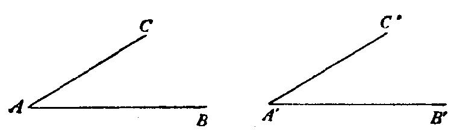

而且把那些与它们相对应的问题与建议也划上线。例如，“求证题”是和“求
解题”相对应的(在“求解题，求证题”标题下的第5，6小节中，我们再系统地
讨论这种对应关系)。
“前提是什么?”
“两角在不同的平面上，其中一个的每一边平行于另一角的对应边，且方
向相同。”
“结论是什么?”
“两角相等。”
“画张图，引入适当的符号。”
学生画出图4中的线，并在教师的或多或少的帮助下，标出图4中的字母。
“前提是什么?请用你的符号表达出来。”
“ A ， B ， C 和A'，B'，C'不在同一平面上，且 AB ∥A'B'， AC ∥A'C'。 AB 的
方向与A'B'的方向相同，而 AC 的方向与 A'C'的方向相同。”
图4
“结论是什么?”
“看着结论 ! 尝试想起一个具有相同或相似结沦的熟悉的定理。”
“如果两个三角形全等，则对应角相等。”
“很好 ! 现在有一个与你的问题有关的定理，且早已证明。你能否利用
它?”
“我想如此，不过我还不清楚怎么办。”
“为了可能利用它，你是否应该引入某个辅助元素?”
…… ……
“好，你提得非常好的那个定理是关于三角形的，是关于一对全等三角形
的。在你的图中有没有三角形?”
“没有，但我能引进一些。让我连接 B 与 C ，B'与C'，这样就有了两个三角
形， ABC 和A'B'C'。”
“做得好，但是这些三角形有什么用?”
“去证明结论；∠ BAC= ∠ B ’ A ’ C ’”
“好，如果你希望汪明这点，你需要两个什么样的三角形?”
“全等三角形。噢，对了，我可以选择 B ， C ，B'，C'，使得
AB=A'B' ， AC=A'C' ”
“好极了!现在你希望证明什么?”
“我希望证明两个三角形全等，
△ ABC= △A'B'C'
如果我能证明这点，则立即可得结论∠ BAC= ∠B'A'C'。”
“妙!你有了一个新目标，这目标是一个新结论。看着这结论! 并且尝试